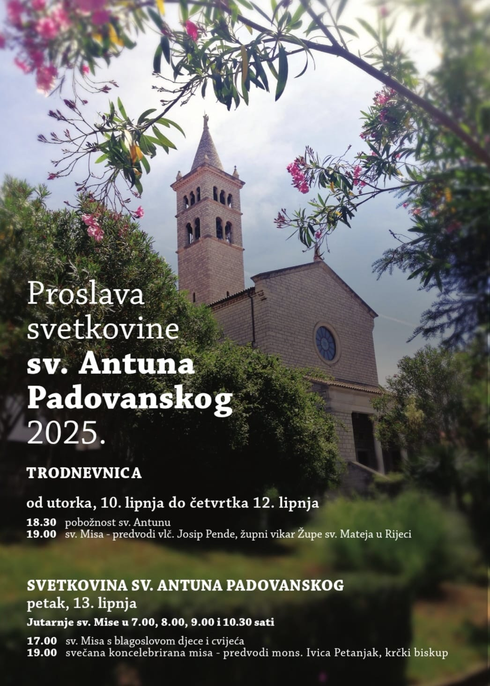

Župa Sveti Antun
Varaždinska 2, Pula, Croatia
052 216 225
Radno vrijeme župnog ureda:
ponedjeljkom, srijedom, četvrtkom i petkom od 17 do 18 sati
SV. MISE
Radnim danom: 7h 19h
Nedjeljom:
8h 10:30h 12h 19h
Subotom: 7h
Euharistijsko klanjanje:
četvrtkom nakon večernje mise
Molitva krunice: svakodnevno u 18:30h
Pjevana večernja (časoslov): nedjeljom u 18:30h
Važne informacije

ŽUPNI VJERONAUK ZA UČENIKE OSNOVNIH ŠKOLA
III. razred (prvopričesnici):
utorkom u 10 ili 15 h.
IV. razred: utorkom u 16 h.
V. razred: utorkom u 16 h.
VI. razred: utorkom u 16 h.
VII. razred: utorkom u 16 h.
VIII. razred (krizmanici): četvrtkom u 16 h.
VJERONAUK ZA STUDENTE: srijedom u 20 h.
VJERONAUK ZA KATEKUMENE: ponedjeljkom u 19.30 h.
KATEHEZE ZA ODRASLE: utorkom nakon večernje mise.
FRANJEVAČKI SVJETOVNI RED:
susret treće nedjelje u mjesecu u 17 h.
NEOKATEKUMENSKI PUT: srijedom i subotom u 20 h.
MOLITVENA ZAJEDNICA SV. PADRE PIJA:
prvi četvrtak u mjesecu u 17.30 h.